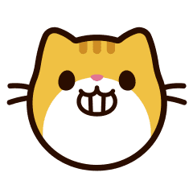

<ion-content center text-center>
  
    <ion-text color="primary">
      <h1>Ionic Kittens</h1>
    </ion-text>

    

    <ion-grid fixed>
      <ion-row>
        <ion-col size="12">
          <ion-text>
            <p id="descricao">"Meow!"</p>
          </ion-text>
        </ion-col>
      </ion-row>
    </ion-grid>

    <ion-input name="input" [(ngModel)]="nome" type="text" autofocus="true" autocomplete="on"  placeholder="Insira o id do gato aqui"></ion-input>

    <!-- Botão para procurar o gato -->
    <ion-button id="btn" size="large" (click)="procurarGato(nome)" >
      Pesquise!
    </ion-button>


</ion-content>